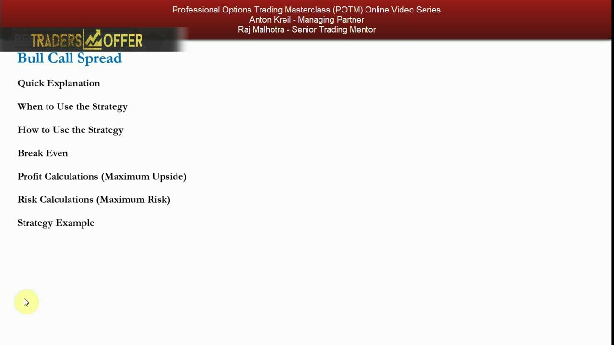
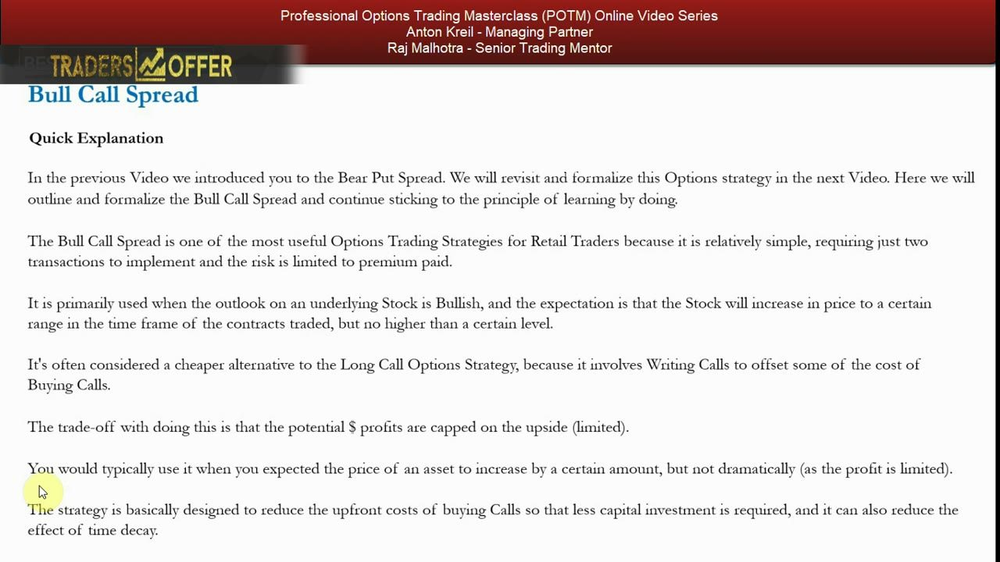
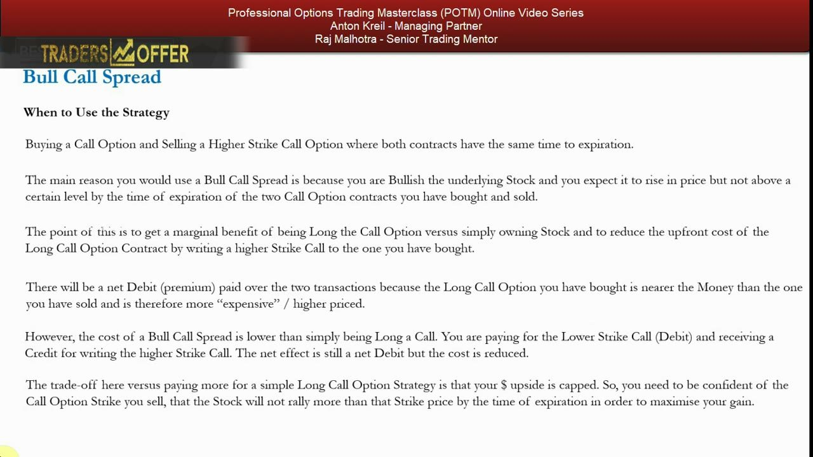
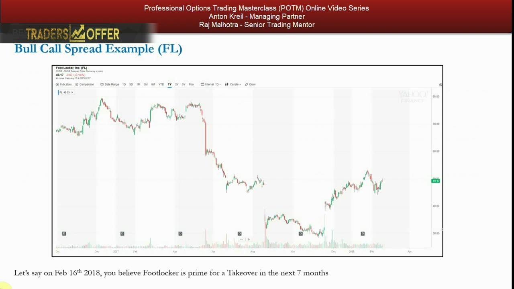
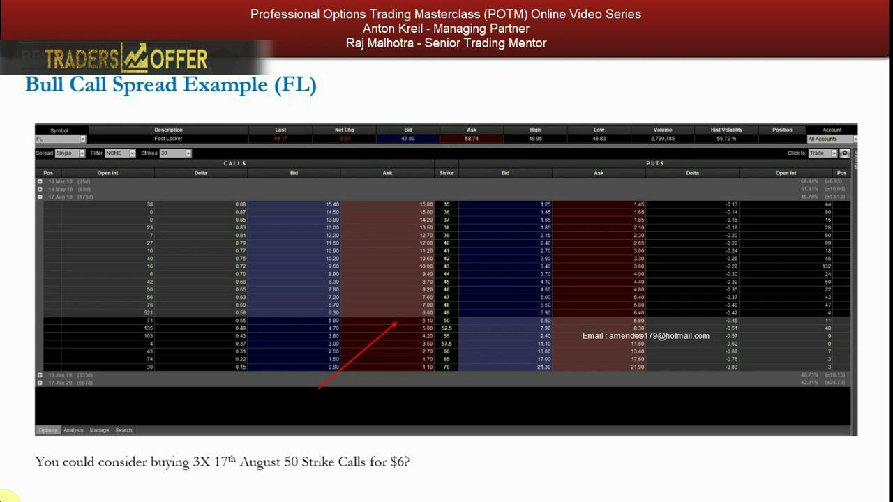
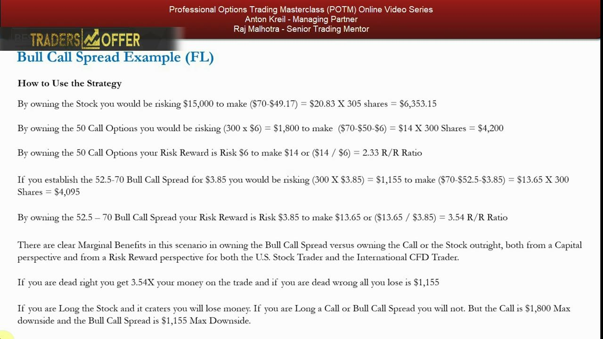

Options Spreads 1 — The Bull Call Spread
Buy a lower-strike call and sell a higher-strike call of the same expiry to build a cheaper, risk-defined, directionally bullish bet with a capped upside.
The bull call spread is one of the most useful strategies for retail traders: two transactions, a known limited risk, and a lower breakeven than a plain long call. You trade away unlimited upside above your short strike in exchange for cheaper cost, better risk/reward, and freed-up capital.
The gist
- A vertical spread = two options of the same type and same expiry at different strikes, one bought and one sold, to reduce cost and risk.
- Bull call spread = buy a lower-strike call + sell a higher-strike call, same expiry → a net DEBIT. Directional · Bullish · 2 transactions.
- Use it when you expect the stock to rise to a specific level but NO HIGHER — the short (higher) strike is where you think the stock is capped.
- Formulas: Max Risk = net debit; Max Gain = strike width − net debit; Breakeven = long strike + net debit.
- Writing the higher call offsets part of the cost of the bought call and cuts time-decay drag, giving a lower breakeven and better risk/reward — at the cost of a CAPPED upside at the short strike.
- It ranks HIGH in usefulness: simple, known limited risk, capital-efficient — frees capital to fund other trades (an opportunity-cost-of-capital benefit).
- Secondary use: a capped long-call hedge against an unlimited-downside short-stock position.
- FL worked example (16 Feb 2018, spot $49.17): the 52.5/70 spread @ $3.85 net debit risks $1,155 to make $4,095 → R/R 3.54, breakeven $56.35 — beating both long stock and the single 50 call.
What a vertical spread is
- A vertical spread combines two options of the SAME type (both calls or both puts), SAME expiry, but DIFFERENT strikes.
- One leg is bought and the other is sold (written) — the sold leg offsets part of the cost of the bought leg.
- The net effect reduces both cost and risk versus a single-option position.
- This lesson formalizes the bull call spread; the next revisits and formalizes the bear put spread introduced earlier at the index level.
Spreads are the transition from single-leg option bets to structured, risk-defined positions. The vertical (same expiry, different strikes) is the foundational building block, learned here at the stock level rather than the index level.

The bull call spread defined
- Buy a lower-strike call AND sell a higher-strike call, both with the same expiry.
- Parameters: Directional · Bullish · Simple · only 2 transactions · a DEBIT trade.
- It is one of the most useful strategies for retail traders — relatively simple, and risk is limited to the premium paid.
- It is a cheaper alternative to a plain long call because writing the higher call offsets some of the cost of buying the lower call.
The bull call spread is primarily used when your outlook is bullish and you expect the stock to rise to a certain range — but no higher than a certain level — inside the contract's time frame.

When to use it — and the trade-off
- Use it when you're bullish and expect a rise to a specific level, but NOT a dramatic move — because the profit is capped.
- There is a net DEBIT: the long (lower-strike) call is nearer the money and therefore more expensive than the higher-strike call you write.
- You pay a debit for the lower call and receive a credit for writing the higher call — net effect is still a debit, but the cost is reduced.
- The trade-off: your dollar upside is capped, so you must be confident the stock won't rally beyond the strike you sell by expiration.
The written higher call is what makes this cheaper than a long call, but it is also what caps the profit. Confidence in the ceiling (the short strike) is the whole thesis.

The formulas
- Max Risk = net debit paid (all you can lose if both legs expire worthless).
- Max Gain = strike width − net debit (achieved if the stock finishes at or above the short strike).
- Breakeven = long strike + net debit.
- The lower breakeven versus a plain long call is a direct result of the credit received on the written call.
Because you know Max Risk, Max Gain and Breakeven at the moment of entry, this is a fully risk-defined trade — you know exactly what you stand to lose and make before you put it on.
Why it ranks HIGH in usefulness
- Simple to deploy, only two transactions, and a directional bet — which is what the retail mandate always wants.
- Known, limited risk: you cannot lose more than the net debit even if the stock craters to zero.
- Capital-efficient — it needs less capital than long stock or a long call, freeing capital to fund other positions.
- That freed capital is an opportunity-cost-of-capital benefit on top of the defined risk.
Anton ranks the bull call spread high in usefulness precisely because it packages a directional view into a simple, cheap, risk-defined structure that also frees up capital for other ideas.
Making money two ways — and the capped upside
- You profit on the long call as the stock rises, AND you collect time decay on the short call you've written.
- Ideal outcome: the stock rises to around the short strike by expiry — that's where maximum profit sits.
- If the stock goes ABOVE the short strike, the written call moves into a loss, but this costs nothing net — the long call keeps gaining at the same rate.
- If the stock doesn't rise at all, both legs expire worthless and you lose only the net debit.
The two profit engines (long-call appreciation plus short-call decay) are why the spread earns a marginal benefit over stock, but they also lock the ceiling: once past the short strike, further stock gains no longer help you.
Strike selection is the key decision
- The biggest decision is choosing the strike of the call you SELL — it defines your ceiling.
- Maximum profit is made only if the stock reaches the short strike by expiry; going further earns nothing.
- Sell the strike where you believe the stock is capped and won't go higher.
- For a moderate expected rise, buy an at-the-money call; for an explosive move, consider buying ~3–5% out-of-the-money and selling a higher strike near where you expect it to settle.
The short strike is a direct expression of your fundamental view of the ceiling. Get it right and you capture the full strike-width-minus-debit payoff; set it too low and you cap yourself short of the move.
The secondary use — hedging a short stock position
- A bull call spread can hedge a short-stock position whose downside is theoretically unlimited (stock can go to infinity).
- Buying an at- or slightly out-of-the-money call and selling a higher-strike call reduces the cost of that long-call hedge.
- If the short squeezes aggressively, the hedge pays out and offsets the loss on the short stock.
- The gain from the hedge gives you fresh capital ammunition to short more into a technical squeeze if the fundamentals haven't changed.
Because a short's downside is theoretically infinite, a cheap, capped bull call spread is an effective, capital-light insurance layer that can add significant value to a portfolio over time.
The disadvantages
- Double the commissions — you both write a contract and buy a contract instead of a single transaction.
- Profits are capped: if the stock rises beyond the short strike, you make no further gains.
- Versus a long call or long stock, you give up the theoretically much higher ROI of an uncapped upside (a stock can go to infinity).
- These are minor and are outweighed in the reward analysis whenever the risk/reward beats owning the call or the stock outright.
The downsides are real but small: extra commission and a ceiling on profit. When the risk/reward is better than the alternatives, they are more than offset.
FL example — the setup
- Foot Locker (FL): on 16 Feb 2018 you believe it's a prime takeover target within the next 7 months.
- Fundamental view: bullish, a directional bet, but no way it gets taken over above $70 per share.
- Spot price $49.17; you want $15,000 of exposure to the idea.
- Long stock would be $15,000 / $49.17 = 305 shares (US 50% margin ≈ $7,500; international CFD ~20% ≈ $3,000 — but you're really risking the full $15,000).
The thesis is a bounded bullish view: something happens, but the ceiling is $70. That bounded ceiling is exactly the situation a bull call spread is built for — cap the upside where you think the stock is capped.

FL example — the option chain
- Expiry 17 Aug 2018 → 179 days to expiry from 16 Feb; Hist Volatility 55.72%.
- Chain quotes: 50 call ~$6, 52.50 call $4.85, 70 call $1.
- Alternative A — buy 3× the 50 strike calls for $6 each; breakeven = $50 + $6 = $56; 300 × $50 = $15,000 notional if in the money.
- Alternative B — buy the 52.50 calls for $4.85 and sell the 70 calls for $1 → net debit $3.85; breakeven = $52.50 + $3.85 = $56.35.
The chain gives the raw prices for the three routes to the same $15,000 idea. Note the spread's breakeven ($56.35) is barely higher than the single call's ($56) yet its cost and risk are far lower.

FL example — the risk/reward showdown
- Long stock: risk $15,000 to make ($70 − $49.17) = $20.83 × 305 = $6,353.15.
- Single 50 call: risk 300 × $6 = $1,800 to make ($70 − $50 − $6) = $14 × 300 = $4,200 → R/R $14/$6 = 2.33; breakeven $56.
- 52.5/70 bull call spread @ $3.85: risk 300 × $3.85 = $1,155 to make ($70 − $52.50 − $3.85) = $13.65 × 300 = $4,095 → R/R $13.65/$3.85 = 3.54; breakeven $56.35.
- The spread wins: best R/R (3.54×) AND lowest max downside ($1,155) — dead right you make 3.54× your money, dead wrong you lose only the $1,155 net debit.
Side by side, the spread delivers the clear marginal benefit: 3.54× R/R versus 2.33× for the single call, with the smallest capital at risk of all three routes. That is why the bull call spread is a high-usefulness structure for a bounded bullish view.

Glossary
- Vertical spreadTwo options of the same type and same expiry at different strikes, one bought and one sold, to reduce cost and risk.
- Bull call spreadBuy a lower-strike call and sell a higher-strike call of the same expiry — a directional, bullish, net-debit position with capped upside.
- Net debitThe net premium paid: the cost of the bought (lower-strike) call minus the credit received for the written (higher-strike) call. It is also the maximum risk.
- Max RiskFor a bull call spread, equal to the net debit paid — all that can be lost if both legs expire worthless.
- Max GainStrike width minus net debit — the profit if the stock finishes at or above the short strike at expiry.
- BreakevenLong strike + net debit; the underlying price at which the spread neither makes nor loses money at expiry.
- Strike widthThe distance between the long and short strikes (e.g. $70 − $52.50 = $17.50), which sets the spread's maximum payoff span.
- Writing a callSelling a call option to collect premium; here the higher-strike call whose premium offsets cost and caps the upside.
- Time decayThe erosion of an option's value as expiry approaches; the written call earns this decay, working in the spread's favour.
- R/R ratioRisk/reward ratio — reward per unit of risk; the FL spread's 3.54 beats the single call's 2.33.
- Short-stock hedgeA secondary use of the bull call spread — a cheap, capped long-call hedge protecting an unlimited-downside short position against a squeeze.